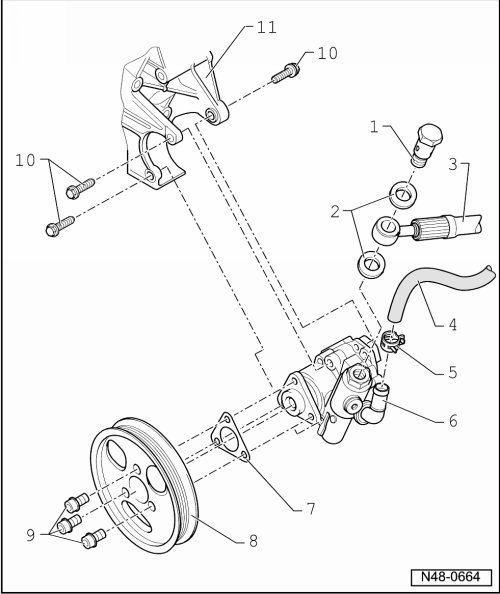

Power Steering Pump Assembly Overview
Power Steering Pump Assembly Overview
• Always replace seals.
• Do not reuse fluid you have drained.
• Hydraulic fluid: replacement part no. G 002 000 or G 004 000 M2

1 Banjo bolt, 40 Nm
2 Seals, 16 x 22
• Replace.
3 Pressure hose
4 Intake hose
5 Spring clamp
6 Power steering pump
• Checking delivery pressure, refer to --> [ Power Steering Pump Checking Delivery Pressure ] Testing and Inspection.
• Fill with fluid before installation.
• Removing and installing, refer to --> [ Power Steering Pump ] Power Steering Pump.
7 Shim
8 Belt pulley
9 Bolt, 25 Nm
10 Bolt, 25 Nm
11 Bracket